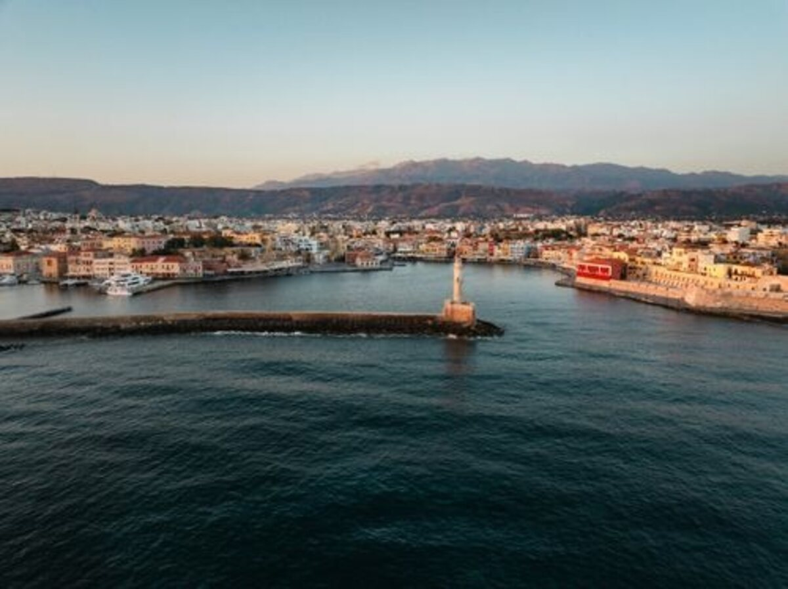

Willkommen in
Wo die Götter die Erde berühren und das Mittelmeer seine tiefsten Blautöne enthüllt.
Entdecken beginnenDas Land der Götter
Griechenland ist mehr als ein Reiseziel — es ist eine Begegnung mit der Wurzel der westlichen Zivilisation. Jahrhundertealte Tempel stehen Seite an Seite mit leuchtend blauen Kuppeln, während das Mittelmeer die Küsten in ein ewiges goldenes Licht taucht.
Die schönsten Inseln
Kreta · Mittelmeer
Griechenlands größte Insel vereint minoische Paläste, die Samariá-Schlucht und eine legendäre Küche. Von Heraklion bis Chaniá — Kreta hat alles.
Kultur · Natur · GastronomieIonische Inseln
Üppiges Grün, venezianische Architektur und das türkiseste Wasser der Ionischen See.
Natur · ArchitekturIonische Inseln
Wilde Landschaften, die Blaue Grotte Melissáni und der berühmte Myrtos-Strand.
Abenteuer · SträndeKykladen · Ägäis

Kykladen · Ägäis
Das berühmteste Bild Griechenlands: Weiß getünchte Häuser mit blauen Kuppeln hoch über der Caldera eines erloschenen Vulkans. Oia, Fira und schwarze Lavastränden warten auf Sie.
Romantik · Sonnenuntergänge → Mehr entdeckenKykladen
Lebendiges Nachtleben, pittoreske Windmühlen und kristallklare Strände.
Lifestyle · Strände → Mehr entdeckenKykladen
Die größte Insel der Kykladen verbindet lange Strände, grüne Täler und antike Tempelreste am Meer.
Natur · AntikeKykladen
Weiße Gassen, kleine Häfen und ein entspanntes Inselleben zwischen Wind und Licht.
Dörfer · SträndeKykladen
Berühmt für Töpferkunst, gutes Essen und ruhige Buchten mit klarem Wasser.
Kulinarik · RuheKykladen
Vulkanische Küsten, leuchtende Felsen und eine der spektakulärsten Buchten der Ägäis.
Geologie · SträndeKykladen
Elegante Hauptstadt der Kykladen mit neoklassischer Architektur und lebendiger Hafenatmosphäre.
Architektur · HafenKykladen
Pilgerinsel mit Dörfern, Marmorkunst und stillen Landschaften abseits der großen Routen.
Pilger · KunstKykladen
Klippen, das Kloster Hozoviotissa und tiefes Blau machen Amorgós zu einer der dramatischsten Inseln der Ägäis.
Kloster · MeerKykladen
Abgelegen, ruhig und windgeformt liegt Anafi wie ein stiller Rand der Kykladen im Meer.
Ruhe · WeiteKykladen
Grün, wasserreich und mit Wanderwegen durch Täler und Dörfer gehört Andros zu den vielseitigsten Kykladeninseln.
Wandern · NaturKykladen
Klein, entspannt und bekannt für Höhlen, Strände und ein gemütliches Sommerleben.
Höhlen · SträndeKykladen
Kleine Insel für alle, die Stille, klares Wasser und echte Abgeschiedenheit suchen.
Abseits · MeerKykladen
Winzig und friedlich, mit Höhlen, Buchten und einem ganz langsamen Rhythmus.
Stille · NaturKykladen
Die stille Schwester von Santorin mit Blick auf die Caldera und einem sehr ursprünglichen Charakter.
Caldera · UrsprünglichKykladen
Bekannt für Strände, Hügel mit Blick aufs Meer und ein lebendiges Sommerleben.
Strände · NachtlebenKykladen
Nah an Athen und dennoch ruhig, mit Wanderwegen, Dörfern und eleganter Gelassenheit.
Wandern · NäheKykladen
Weiße Felsen, kleine Häfen und ein sehr ruhiges Inselleben südlich von Milos.
Ruhig · KüsteKykladen
Kleine Inselgruppe mit türkisfarbenem Wasser und fast karibischem Küstengefühl.
Lagunen · InselnKykladen
Heiße Quellen, Hügel und ruhige Buchten machen Kýthnos zum entspannten Zwischenziel.
Thermen · BuchtenKykladen
Zerklüftete Hügel, kleine Häfen und eine rauere, ursprüngliche Kykladen-Seite.
Rau · OriginalKykladen
Klein, ruhig und fast unberührt mit alten Wegen und wenig Tourismus.
Still · AuthentischKykladen
Sehr klein, sehr ruhig und mit einer entspannten Badebuchten-Atmosphäre.
Buchten · RuheKykladen
Steile Felsen, kleine Chora und ein sehr ruhiger, fotogener Inselcharakter.
Steil · StillDodekanes · Ägäis
Dodekanes · Nördlich
Kleinste bewohnte Insel des Dodekanes — unberührt, ruhig, nur Fischerdörfer und kristallklares Meer.
Ursprünglich · NaturDodekanes · Westlich
Schmetterlingsförmige Insel mit einem Kastro über dem Dorf, weißen Windmühlen und versteckten Buchten.
Kastro · SträndeDodekanes · Zentral
Die Insel der Schwammtaucher — heute ein Mekka für Kletterer, mit zerklüfteten Felswänden direkt am Meer.
Klettern · TauchenDodekanes · Südlich
Langgestreckte Insel zwischen Rhodos und Kreta, bekannt für endlose Sandstrände und Apéla Beach.
Kitesurfen · SträndeDodekanes · Südlich
Abgelegene Felseninsel südlich von Kárpathos — authentisch, unentdeckt, mit herzlichen Bewohnern.
Authentisch · RuheDodekanes · Östlichste Ecke
Griechenlands östlichste Insel — winzig, bunt und legendär durch den Film Mediterraneo. Die Blaue Grotte ist atemberaubend.
Blaue Grotte · FilmDodekanes · Zentral
Geburtsort des Hippokrates, antiker Asklepios-Tempel und lange, feinsandige Strände. Lebendiges Nachtleben in der Hauptstadt.
Antike · Strände · PartyDodekanes · Nördlich
Stille Insel nahe Pátmos — türkisfarbene Lagunen, keine Tourismusindustrie, nur Natur und Zeit.
Lagunen · StilleDodekanes · Zentral
Mondäne Art-déco-Architektur aus der italienischen Kolonialzeit, geschützte Buchten und ein imposantes byzantinisches Kastro.
Art déco · GeschichteDodekanes · Zentral
Auf einem aktiven Vulkan gebaut — man spaziert in den Krater und spürt die heiße Erde unter den Füßen. Einzigartig in Griechenland.
Vulkan · AbenteuerDodekanes · Nördlich
Die heilige Insel der Apokalypse — Johannes schrieb hier die Offenbarung. Das Kloster Agios Ioannis und die Höhle der Apokalypse sind UNESCO-Welterbe.
UNESCO · PilgerstätteDodekanes · Hauptinsel
Die Hauptstadt des Dodekanes vereint eine der besterhaltenen mittelalterlichen Altstädte Europas (UNESCO) mit 300 Sonnentagen, dem Koloss-Mythos und paradiesischen Stränden wie Lindos.
UNESCO · Geschichte · SträndeDodekanes · Südlich
Pastellfarbene neoklassische Häuser steigen vom Hafen den Hügel hinauf — das fotogenste Hafenbild der Ägäis. Stille, Eleganz, kein Massentourismus.
Architektur · HafenDodekanes · Zentral
Naturschutzinsel mit reicher Vogelwelt, mittelalterlichen Burgen auf jedem Hügel und einer der ersten 100% erneuerbaren Inselgemeinden Europas.
Natur · NachhaltigkeitDodekanes · Südlich
Winzige Insel nahe Rhodos — autofreies Paradies mit einem einzigen bunten Hafen, kristallklarem Wasser und absoluter Ruhe.
Autofrei · RuheStädte & Historische Orte
Die Wiege der Demokratie
Kulturhauptstadt des Nordens
Erste Hauptstadt Griechenlands
Nabel der Welt
Antike Architektur
Tempel, Theater und Agoren — Griechenlands antike Bauwerke prägen noch heute die Weltarchitektur.
Theater & Philosophie
Geburtsort von Demokratie, Philosophie, Tragödie und Komödie. Sokrates, Platon, Aristoteles — hier dachten sie.
Olympische Spiele
Seit 776 v. Chr. bis in die Moderne: Olympia, der Ursprung des olympischen Gedankens.
Seefahrt & Mythos
Odysseus, die Argonauten, Poseidon — das Meer ist das Herz der griechischen Mythologie.
Byzantinische Kirchen
Tausende orthodoxe Kirchen und Klöster — darunter das heilige Athos-Halbinsel.
Mediterrane Lebensart
Philoxenia — die Liebe zum Fremden. Griechische Gastfreundschaft ist Legende.
Griechische Küche
Choriatiki
Griechischer Bauernsalat →
Moussaka
Auberginen-Hackfleisch-Auflauf →
Tzatziki
Joghurt-Knoblauch-Dip →
Gegrillter Oktopus
Frisch vom Fischerboot
Baklava
Blätterteig mit Honig & Nüssen
Kalamata-Oliven
Das flüssige Gold der Götter
Frischer Fisch
Täglich frisch vom Markt
Assyrtiko
Weißwein aus Santorin
Frappé
Der griechische Eiskaffe
Galaktoboureko
Griechischer Grießkuchen
Entdecke die Regionen
Das pulsierende Herz Griechenlands vereint antikes Erbe mit modernem Leben. Akropolis, Plaka und endlose Museen erwarten Sie.
Die Halbinsel der Antike: Mykene, Olympia, Epidauros und die mittelalterlichen Türme von Mani.
Nördliches Griechenland mit Thessaloniki, den Seen Mazedoniens und dem heiligen Berg Athos.
Spektakuläre Felsklöster von Meteora thronen hoch über der Ebene von Thessalien — ein Weltwunder.
Das ikonische Griechenland: Santorin, Mykonos, Náxos und Páros bilden den mythischen Inselkreis der Ägäis.
Grüner und üppiger als die Kykladen: Korfu, Kefaloniá und Zakynthos locken mit türkisem Wasser und venezianischem Flair.
Die Griechen haben uns gelehrt, als freie Menschen zu denken, zu leben und zu lieben.— In der Tradition der Philhellenen